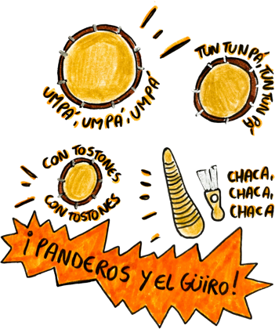

Móntate en el ritmo
Canta, toca o hazle coro a un ritmo, y otra gente se monta encima de lo tuyo. Así se arma el llameo.
Ritmos para montarte
Escúchalo, abre un llameo y graba la primera toma.
Llameos abiertos
Móntate
Prototipo: aquí la toma se simula con un sonido de ejemplo. En la app se graba con el micrófono.
¿Cómo quedó?
Práctica
Ensaya solo o sola con los ritmos. Lo que grabes aquí es privado hasta que decidas compartirlo.
Mis tomas privadas
Apaga el que vas a tocar tú.
Clases
Aprende cada género con quien lo enseña.
Plena
Taller Toca PlenaBomba
Maestro o maestra por anunciarBullerengue
Maestro o maestra por anunciarBossa nova
Maestro o maestra por anunciarMódulo 1 · Panderos y güiro
Taller Toca Plena · 14 clases

Plena · Taller Toca Plena
Perfil
Explorando como invitado
Módulo 1 de plena incluido
Sigue aprendiendo
El Módulo 1 de plena es gratis. Suscríbete para desbloquear los demás.
Comunidad
Pregunta, comparte y aprende con gente que toca y canta como tú.
Publicaciones de ejemplo del prototipoPrototipo: la grabación se simula. En la app se graba con el micrófono del teléfono.
Nueva publicación
Escribe con respeto. Cualquier persona puede reportar una publicación y el equipo la revisa.
Crea tu cuenta
Con tu cuenta te montas en llameos, guardas tus tomas y participas en la comunidad.
¿Ya tienes cuenta?
Bienvenido de nuevo
Entra para seguir montándote.
¿No tienes cuenta?